鵯越大仏/兵庫県
神戸市北区にある鵯越霊園。
源平合戦における義経の坂落としで御馴染みの鵯越である。
坂落としに関してはその正確な場所は諸説あるが、ここ鵯越一帯も確かに急峻な傾斜地だ。
そんな鵯越霊園の一画に大仏があるという。しかも古いのだという。
広大な墓地だが大仏さんは比較的簡単に見つかった。
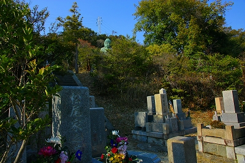
おおお、立派な大仏さんですなー。
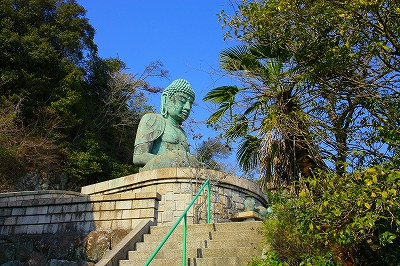
緑青が浮いていていかにも銅像、てな感じですなー。
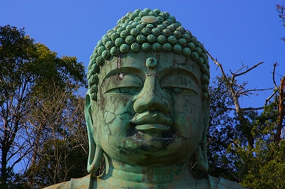
厚ぼったい唇に重そうな瞼。特徴的なお顔立ちである。
この大仏さんが建立されたのは昭和7年。
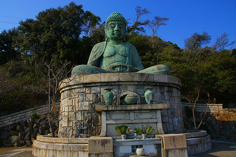
台座のデザインや材質がいかにも昭和一ケタっぽい。
台座の左右には扉が付いており、中には入れなかったが恐らく納骨堂になっているのではなかろうか。
扉に誘うように手摺の部分が内側にカーブしている。この辺も昭和初期っぽいデザインだ。
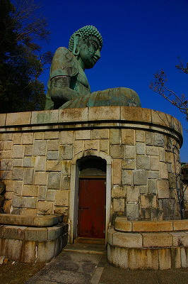 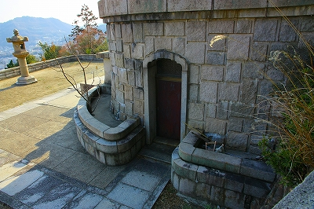
…と、さっきからずーっと気になっていたのだが…
この大仏さん、銅像なのかね…
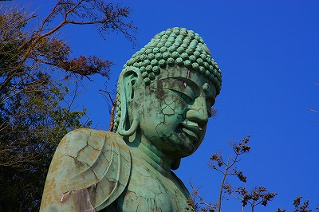
色は間違いなく緑青の浮いた銅そのものなのだが、ヒビの入り方や画像では判りにくいが微妙なマチエールがどうも違和感がなくもないようなあるような…
大仏さんの後はスロープになっているので背後から近づいてみる。
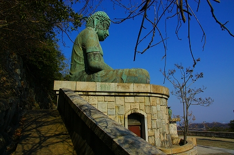
大仏さんの背中。
何か落書きされちゃってるっぽい。
そっか、銅像でこの大きさだったら継ぎ目があるはず。ない！ということは…
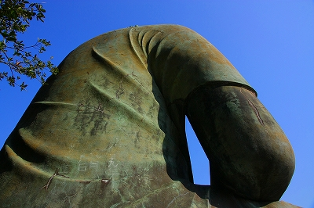
お尻の辺りに換気口（排水口？）が後付けされている。恐らく胎内の湿気を抜くためだろう。
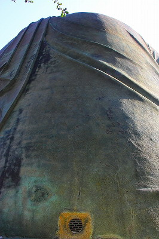 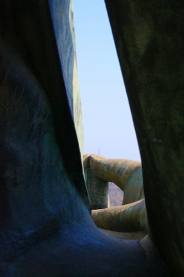
さらに近づいてみた。
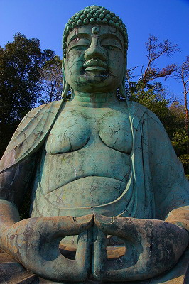 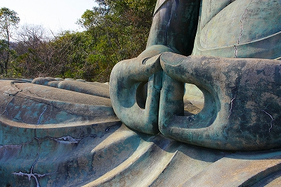
…やはり銅像でなくコンクリ製だった。
近くで見ると表面はモルタル仕上げで、その上に緑青色の塗装をしているのが良くわかる。
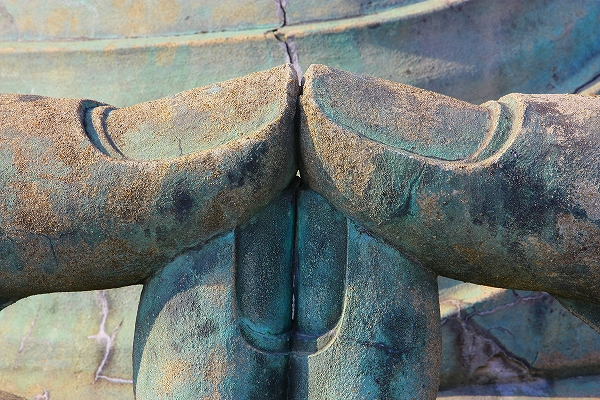
ここまで近づかないと判らないほど見事な仕上げ、ということになろう。
見事な戦前コンクリ大仏、である。
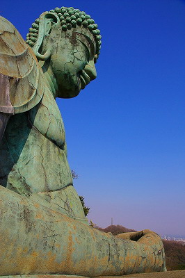
そういえば富山の庄川大仏も同じようにコンクリ仏をペイントして銅像風に仕上げてあった。
奇しくも同じ昭和7年に開眼された大仏さんだ。
この頃流行ったんだろうか？銅像風コンクリ仏。
大仏さんは高台に鎮座し、眺めが良い。
神戸の街と海が広がる。
これは長田から須磨あたりだろうか。
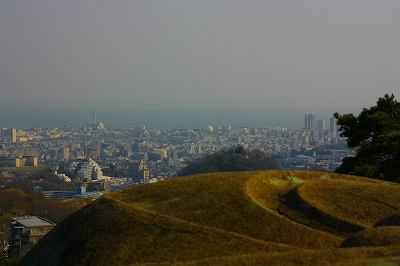
こちらはメリケンパーク方面。ポートタワーやホテルオークラなどが見える。
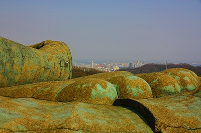
大仏さんの前には半月前に起こった東日本大震災の犠牲者を追悼する手作りの小さな塔婆が置かれていた。
2011.03.
珍寺大道場 HOME